Welcome to wild rescues. Our mission is to recue, rehabilitate, and release wild life back into
there natrual enviorment. We are a nonprofit organization dedicated to helping injured wildlife.
Our staff provides around the clock care for wildlife in need. we also provide long term care for wildlife
that cannot be released back into there natrual enviorment.
Will you partner with us? we need caring volunteers to help care for our animals. You can also donate, become a member, or become a sponser. Contact us today.
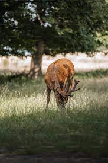
Russ is a blind deer. He was brought to us by a hunter who found him wandering in circles.
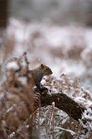
Meet Nugget. He is learning how to climb trees and will be released in a few more weeks.
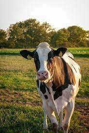
This is Ellie. She was neglected by her ownder and malnourished when she was rescued.
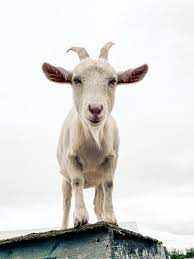
Say hi to vinne. His back legs were injured, making it difficult for him to get around.
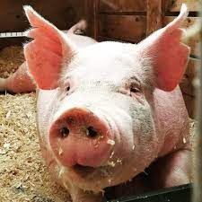
Rose was just a baby when she arrived. Now she has babies
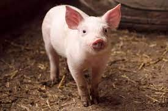
Squirt is one of roseies babies
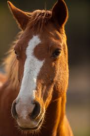
Muffin has come a long way. She was very thin when she was rescued.
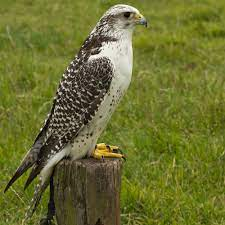
Poor Harley was rescued when he was just three weeks old. He is getting big and will be released in about a month.
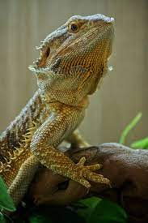
Gizmo was abandoned by his owner and is available for adoption.
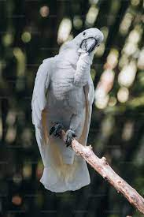
Peaches was also abandoned by his owner. He loves to talk.
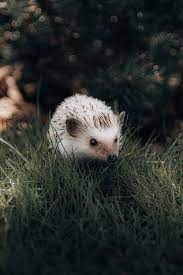
Sonny was just a baby when he was brought to us for Rehabilitation.
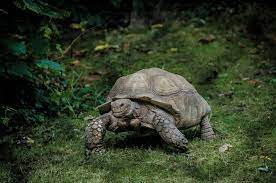
Poor Victor has "shell pyramiding" a form of bone disease